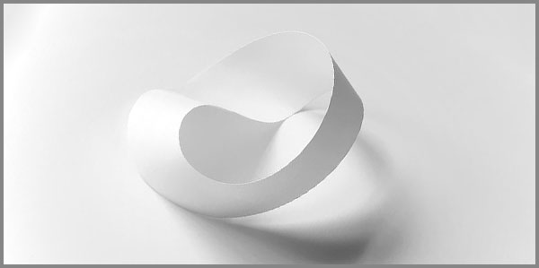

18. Սեփական Գոյության Մեջ Ապրած Ժամանակը
 |
Գերմանացի ֆիզիկես Ալբերտ Այնշտայնի հարաբերականության այնքան անհասկանալի տեսությունը, որի ստեղծման համար նախադեպ էին հանդիսացել Գալիլեո Գալիլեյի հարաբերականության սկզբունքը, Ջեյմս Մաքսվելի էլեկտրամագնիսական տեսությունն ու եթերային միջավայրի գոյաբանական հարցը՝ 1905 թվականին ընդունվեց գիտական հանրության կողմից մեծ վերապահումներով իր տրամաբանությունը կոտրող ապացուցողական գիտակական թեզերի տրամաբանությունից դուրս տրամաբանական անեզրությունների անըբռնելության պատճառով, որի կիրառական ապացույցները մինչ օրս հատիկ-հատիկ հավաքվելով ու իրար գումարվելով դեռևս ապացուցում են այս տեսության կյանքի իրավունքը:
Համաձայն այս տեսության լույսի արագությամբ, կամ դրան մոտ արագություններով շարժվող համակարգերում ժամանակը դանդաղում է կագնելու աստիճան, իսկ չափերը դառնում են անչափելի դրանց կրճատման պատճառով: Այս պայմաններում զանգվածն ու էներգիան կորցնելով իրենց դասական կապը ստեղծում են հակասական և անընկալելի օրինաչափություն: Այսպիսին է Այնշտեյնյան տիզերի անեզրութունների հարաբերությունը նաև մարդկային ներքնաշխարհի անսահմանության պատկերի ստեղծման գործում, որտեղ սեփական գոյության ազդեցության տակ ժամանակը սկզբում դանդաղ, հետո սրընթաց դանդաղում է, ապա կանգ է առնում և մի պահ այլևս արդեն նրա գոյությունը կամ չգոյությունը դադարում է նշանակություն ունենալ:
Սեփական գոյության մեջ ապրած ժամանակը չի ենթարկվում ժամացույցի տիրապետությանը: Այն չի հաշվարկվում անցյալով կամ ապագայով, այլ միայն զգացվում է ներքուստ, սեփական զգայնությամբ այնպես, որ ամեն պահը միաժամանակ պարզ ու անսահման է, թափանցիկ ու խորը՝ ինչպես մտքերը, որոնք փորձում ես բռնել, բայց երբեք դա անել չես կարողանում:
Հենց այդ հոսքի մեջ է որ մենք հանդիպում ենք ինքներս մեզ՝ ոչ մարմնի, ոչ արտաքին կերպարի միջոցով, այլ մի ներքին զգացողությամբ, որով զգում ես քո ինքնությունը հենց այդ պահին: Այստեղ կփորձենք բացահայտել այն խորը շերտերը, որտեղ սեփական գոյության զգացումը և ներսի ազատությունը դառնում են ինքնություն և դա չի նշանակում մի անշարժ վիճակ: Այն մշտապես ձևափոխվող հոսք է, որը դիմադրելով դրսի ճնշումներին՝ միաժամանակ ընդունում է բոլոր անհանգիստ մղումները, անորոշությունները և խառնաշփոթը:
Երբ ամեն մի շունչ, ամեն թեթև շարժումը զգացվում է որպես ամբողջություն, մենք հասնում ենք մի վիճակի, որտեղ սեփական գոյության մեջ ժամանակը դառնում է անշարժ մի կանգառ, և այդ պահը՝ անընդհատ ծորող, անորոշ ու հավերժ, դիմակայող, բայց միաժամանակ խաղաղ՝ արդեն իսկ մեր էությունն է:
Ժամանակի խճճվածությունից ազատագրվելու պահը նրա սահմանափակումից վերացումն է, որը տանում է դեպի ինքնության զգացողության ձեռքբերման՝ աննախադեպ ազատությամբ:
Երբ ժամանակը դադարում է լինել
Ժամանակը՝ որպես մարդկային գոյության անընդհատ միջնորդ, մեր բոլոր գործողությունների հիմքն է։ Երբ անձնական գոյությունը դուրս է գալիս ժամանակի ծուղակից, ամեն քայլ ու միտք դառնում է անվերջություն։ Բայց երբ մենք կանգնած ենք սահմանին, որտեղ անցյալն ու ապագան կորցնում են իրենց իմաստը, ժամանակը դադարում է լինելով, դառնալով հստակ ու անբառ ներկայություն։ Այստեղ չկա անցյալ կամ ապագա։ Միայն ներկա պահը՝ պարզ ու թափանցիկ։
Մարդկային գիտակցության մեջ, երբ մենք կանգնած ենք անվերջության շեմին, ժամանակը ոչ թե քայլում է, այլ կանգնում է մեր ներսում՝ դառնում է մի տեսողական մոմի լույս, որը վառվում է ու սկսում ճառագել միայն այն պահերին, երբ մենք կարողանում ենք փախչել մեր մտքերից ու սուզվել պահի մեջ։
Երբ մենք լիովին գիտակցում ենք, որ անցյալը և ապագան դատարկ են՝ միայն մենք ենք, որ ենք, այդ պահին ժամանակը դադարում է։ Երբ անհայտության մեջ նայելը դառնում է ուղենիշ, մեր էությունը գիտակցում է իր անմահությունը և դադարում է անցյալն ու ապագան նկատելու կարիքը։
Ժամանակը կա միայն այն պահին, երբ չենք փնտրում դրա տիրապետությունը։
Ինքնության ձուլումը անորոշությամբ
Մենք ծնում ենք ինքնությունը միայն այն ժամանակ, երբ ինքներս կանգնում ենք անորոշության առջև: Այն պահերին, երբ մեր բոլոր սահմաններն ու համոզմունքները կորում են, և ամեն քայլը մեզ տանում է դեպի ոչ մի տեղ, այնտեղ, որտեղ գոյությունը դառնում է մշուշոտ, մենք իսկապես տեսնում ենք, թե ինչպիսի ուժ ունենք՝ փախչելու կամ կերտելու մի նոր հոգեբանական աշխարհ: Անորոշությունը մեր գոյության մի մասն է, որը մեզ օգնում է վերաիմաստավորելու կյանքը, որովհետև հենց դրա մեջ է, որ վերականգնվում է այն ուժը, որն առաջանում է՝ երբ ժամանակը դադարում է լինել:
Ամեն չհասկացված պահ մեզ մեկ քայլով ավելի է մոտեցնում մեր իսկական Եսին, որում մենք փոխակերպվում ենք, բայց ոչ որպես ամեն ինչ կասկածի տակ դնող սուբյեկտ, այլ որպես ինքը, հենց այդ կասկածը՝ որպես գոյություն, որն ընդունում է ամեն մի ներշնչված հորիզոն, առանց դրանցով սահմանափակվելու։
Անորոշությունը, որը ծածկում է ճշմարտությունը՝ դառնում է ոչ միայն կյանքի մաս, այլև ինքնության միտում: Երբ մենք հայտնվում ենք անկայուն իրավիճակներում, մեր զգացողությունները, մտքերը և ձևերը սկսում են շփվել իրար մեջ, միաժամանակ ստեղծելով նոր միություն: Դա ինքնության ձուլումն է՝ մի պահ, երբ մենք կորցնում ենք այն բացարձակ սահմանները, որոնք սովորաբար սահմանափակում են մեզ:
Այս անորոշությունը մեզ կոչ է անում վերաիմաստավորելու կյանքը՝ առանց կոշտ սահմանների, առանց ամբողջական պատկերի կյանքը դարձելով դինամիկ հոսք, որտեղ ինքնությունը չի ուրվագծվում, այլ միայն զգացվում է: Չկան սուբյեկտ և օբյեկտ, չկա հավաստի ճշմարտություն, միայն հոսող իրականություն, որը մեզ հետ քայլում է անդրադառնալով մեր մեջ:
Ինքնության ձուլման այս վառարանում մենք ոչ թե կորցնում ենք մեր հոգևոր հիմքերը, այլ գտնում ենք դրանք՝ փոխակերպվելով ոչ այն, ինչ մենք էինք, այլ այն, ինչ մենք ունենք հնարավորություն դառնալու:
Անսահմանության մեջ բացահայտվող Եսը
Մարդը միշտ փնտրել է սահմաններ՝ ձևակերպելու համար իր տեղն աշխարհում։ Բայց ամեն անգամ, երբ սահմանները հասնում են իրենց եզրերին ու կոտրվում են, ծնվում է նոր իրականություն։ Այդ կոտրվածքի մեջ մենք հանկարծ հասկանում ենք, որ Եսը միայն մարմին չէ, ոչ էլ միայն միտք: Այն մի ամբողջություն է, որը չի տեղավորվում ժամանակի ու տարածության մեջ։
Անսահմանության մեջ մենք չենք փախչում մեզանից, այլ հակառակը՝ ավելի խորն ենք ընկղմվում մեր ներքին լռության մեջ։ Այդ լռության մեջ բացահայտվում է Եսը՝ ոչ որպես սահմանված ձև, այլ որպես ապրում, որն անցնում է մեր միջով։
Այդ պահերին Եսը դառնում է թափանցիկ, զերծ անունից ու դիմակից։ Այն այլևս չի ուզում վերահսկել իր գոյությունը, այլ պարզապես մնում է բաց՝ հոսող անվերջության առաջ։ Եվ այդտեղ, հենց այդ անեզրության մեջ է, որ մենք հայտնաբերում ենք ինքներս մեզ ամենահստակ ձևով։
Եսը չի սահմանվում աշխարհով: Այն բացահայտվում է այնտեղ, որտեղ սահմանները վերանում են։
Փախուստի անդունդը և փնտրվող լույսը
Մարդը հաճախ փախչում է ինքն իր ներկայությունից, փախչում է անցյալից, փախչում է անորոշ ապագայից, փախչում է իր իսկ մտքերի խճճվածությունից։ Բայց այդ փախուստը երբեք ուղղություն չունի: Այն նման է անդունդի, որտեղ քայլը միայն ավելի խորն է տանում։
Այդ անդունդը վտանգավոր է ոչ թե մթության, այլ դատարկության պատճառով։ Այն մեզ ստիպում է կորցնել մեր ներքին կենտրոնը և դառնալ ճամփորդ առանց հորիզոնի։ Բայց հենց այդ խավարի միջով է ծնվում փնտրվող լույսի կարիքը՝ մի ներքին ծարավ, որը մեզ հիշեցնում է, որ փախուստը երբեք չի կարող մշտական լինել։
Լույսը չի հայտնվում դրսից։ Այն ծնվում է հենց այն պահին, երբ ընդունում ենք մեր փախուստը որպես ճշմարտություն և դադարեցնում ենք վազքը։ Այդ դադարի մեջ բացվում է մի նեղլիկ ճեղքվածք, որից սկսում է շողալ մեր իսկ ներքին լույսը։
Փախուստը միշտ ավարտվում է այնտեղ, որտեղ ճառագում է ներքին լույսը։
Ներքին շխարհը որպես բացարձակ ազատության վայր
Արտաքին աշխարհը միշտ սահմանափակում է մեզ: Կան օրենքներ, կան պարտականություններ, կան պատահական հանգամանքներ, որոնք կարծես ճկում են մեր ճանապարհը։ Բայց կա մի տարածություն, որտեղ ոչ ոք չի կարող թելադրել իր օրենքները: Դա ներաշխարհն է։
Ներաշխարհում մենք ազատ ենք ոչ թե այն պատճառով, որ կարող ենք անել ամեն ինչ, այլ որովհետև այնտեղ չկան պարտադրանքներ։ Մտքերը կարող են փոխակերպվել առանց խոչընդոտների, զգացմունքները կարող են լցվել ու ցնդել առանց դատապարտման, իսկ երևակայությունը կարող է բացել իրականությունից դուրս դռներ։ Այդտեղ նույնիսկ ժամանակը կորցնում է իր իշխանությունը: Պահը կարող է ձգվել անսահման, կամ մի ակնթարթում վերածվել հավերժության։
Ներքին ազատությունը իրական է այնքան ժամանակ, քանի դեռ չենք փորձել այն համեմատել արտաքին չափանիշների հետ։ Այն չի պահանջում վավերացում, չի որոնում ապացույցներ: Այն պարզապես գոյություն ունի որպես մեր ամենախորը և բնական շունչ։
Ամենամեծ ազատությունը՝ անբանտարկելիությունն է մեր ներսում։
Անցողիկության մեջ ապրելու արվեստը
Ամեն բան անցողիկ է: Օրը մարում է, ինչպես մոմի լույսը, զգացմունքները ծագում են ու մարում, հարաբերությունները բացվում են ու փակվում, ինչպես ծաղիկներ։ Մարդու սխալն այն է, որ նա փորձում է հավերժ պահել անցողիկը։ Մենք կառչում ենք պահերից կամ զգացողություններից՝ կարծելով, թե կարող ենք կանգնեցնել նրանց հոսքը։ Բայց հենց այդ կառչումն է, որ մեզ ցավ է բերում։
Անցողիկության մեջ ապրելու արվեստը չի նշանակում հրաժարվել կյանքից։ Այն նշանակում է սովորել համտեսել ամեն պահն այնպես, կարծես այն առաջինն ու վերջինն է։ Դիտել արևի մայրամուտը՝ առանց ցանկության այն պահելու, լսել ծիծաղը՝ առանց վախի, որ այն դադարելու է, սիրել մարդուն՝ առանց սեփականության մոլորության։
Կյանքը գեղեցիկ է ոչ թե նրա տևողությամբ, այլ նրա անընդհատ փոփոխությամբ։ Ամեն վայրկյան իր մեջ կրում է ամբողջականություն, եթե մենք դադարենք փնտրել հավերժությունը արտաքինում և տեսնենք այն հենց այս պահի մեջ։
Արվեստն այն է, որ ընդունես ամեն ինչի անցողիկությունը՝ դրա մեջ գտնելով հավերժականը։
Կենդանի ժամանակը որպես անպարտելի ընդմիջում
Կյանքի հոսքը թվում է անընդհատ, բայց մեր իսկական գոյությունը հայտնվում է ընդմիջումների մեջ։ Դա այն պահն է, երբ աշխարհը լռում է, և մենք լսում ենք ոչ թե արտաքին աղմուկը, այլ ներքին շունչը։ Այդ ընդմիջումը չի չափվում ժամացույցով: Այն չի երկարում ու չի կարճվում։ Այն գոյություն ունի միայն որպես անխախտ գոյության ձև։
Կենդանի ժամանակը ծնվում է հենց այն պահին, երբ մենք դադարեցնում ենք մեր անդադար վազքը, թողնում ենք, որ անցյալն ու ապագան մի պահ կորցնեն իրենց իշխանությունը։ Այդ կանգառը մեզ չի թուլացնում, այն դառնում է անպարտելի ուժի աղբյուր։ Այստեղ մենք վերականգնվում ենք, գտնում ենք մեզ, և մի պահ զգում ենք, որ ոչ մի բան չի սպառնում մեր էությանը։
Այս ընդմիջումները փոքրիկ դռներ են հավերժության, սովորական չեն թվում և հենց դրանց մեջ է թաքնված գոյության ամենահզոր լռությունը։
Անպարտելի է նա, ով կարողանում է կանգ առնել և ապրել կանգառի մեջ։
Արհեստական նպատակների անդունդում
Մարդը հաճախ ապրում է այնպես, կարծես կյանքը անընդհատ մրցույթ է, որտեղ հաղթողը նա է, ով ավելի շատ նպատակ է դնում ու հասնում դրանց։ Բայց այդ նպատակների մեծ մասը պատրանք են: Դրանք ծագում են հասարակության ճնշումներից, ցանկությունից համապատասխանելու ինչ որ չափանիշների, որոնք մեր ներսի հետ իրական կապ չունեն։
Այս նպատակները, որոնք մենք անվանում ենք «հաջողություն», դառնում են անդունդ՝ և որքան խորն ենք ընկնում դրանց մեջ, այնքան հեռանում ենք մեզնից։ Մենք վազում ենք ավելի բարձր դիրքի, ավելի մեծ ձեռքբերման, ավելի արագ հաջողության հետևից, և այդ վազքի մեջ մոռանում ենք թե ինչու ենք ընդհանրապես սկսել քայլել։
Արհեստական նպատակները մեզ խլում են մեր իսկական ազատությունից, քանի որ դրանք կառուցված են արտաքին չափումների վրա։ Բայց հենց որ մենք կանգ ենք առնում և հարցնում՝ «ո՞վ եմ ես առանց այս ամենի», այդ անդունդը սկսում է կորցնել իր ուժը։ Մենք հասկանում ենք, որ իրական նպատակները չեն ծնվում դրսից, այլ բխում են ներսից՝ մեր իսկական ձայնից։
Արհեստական նպատակները միշտ ընկղմում են անդունդ: Իսկական նպատակը բացում է դարպաս։
Ներքին աշխարհի խառնաշփոթը
Մեր ներսը երբեք լիովին լուռ չէ։ Այն հիշեցնում է հորձանուտ, որտեղ միտք ու զգացում, հիշողություն ու երազանք, ցանկություն ու վախ խաչվում են իրար։ Սկզբում դա կարող է թվալ խառնաշփոթ՝ ոչինչ իր տեղում չէ, ոչ մի բան հաստատուն չէ։ Բայց հենց այդ խառնաշփոթի մեջ է թաքնված մեր իսկական ուժը։
Ներքին անկանոն շարժումները ոչ թե խանգարում են մեզ, այլ կենդանություն են տալիս մեր էությանը։ Քաոսը, որ զգում ենք ներսում, հնարավորություն է՝ նորից ու նորից կերտելու ինքնություն, փոխելու ուղին, կասկածելու, որոնելու ու բացահայտելու։ Այդ խառնաշփոթն է, որ պահպանում է մեր ներսի ազատությունը։
Համաձայնվել ներքին խառնաշփոթի հետ՝ նշանակում է ընդունել, որ մենք երբեք չենք կարող լինել ամբողջությամբ ավարտված։ Մենք միշտ ընթացքի մեջ ենք, և այդ ընթացքը հենց մեր իրական գեղեցկությունն է։
Ներքին խառնաշփոթը ոչ թե կործանում՝ այլ արարում է նորից ծնվող Եսը։
Հետգրություն վերջաբանի փոխարեն
Այս բոլոր էջերում մենք շրջեցինք ժամանակի կանգառների ու ընթացքի միջով, ինքնության ձուլման ու խառնաշփոթի խորքերով։ Բայց վերջը՝ ինչպես ամեն սկիզբ, երբեք փակված չէ։ Այն ավելի շատ հիշեցնում է դուռ, որը բացվում է դեպի այն տարածքը, որտեղ արդեն ընթերցողն է որոշում՝ իր ուղու շարունակությունը։
Այստեղ ոչ մի վերջնական պատասխան չկա։ Ոչ էլ պարտադրանք։ Միայն մի թեթև ակնարկ, որ սեփական գոյության մեջ ապրած ժամանակը միշտ ավելի հարազատ է, քան փոխառված գաղափարները։ Եվ եթե այս էջերից որևէ մեկը քեզ կանգնեցրեց մի պահ ու ստիպեց լսել քո ներսը, ապա այս ընթացքը իր նշանակությունը գտավ։
Սա նոր սկիզբ է՝ սկսվող քո ներսում։
«Մենք կառուցում ենք կամուրջներ այնտեղ, ուր մյուսները տեսնում են միայն անդունդներ։»
© 2026 Մոնումենտալ Կամուրջ: Այս կայքի բովանդակությամբ կարող եք ազատորեն կիսվել համացանցում՝ հղում տալով սկզբնաղբյուրին: Տպելու, տպագրելու կամ գիրք կազմելու միջոցով, կամ այլ ֆիզիկական ձևով և որևէ տեխնոլոգիական կրիչով տարածելը առանց հեղինակի գրավոր համաձայնության արգելվում է: Գիտական, կրթական կամ ստեղծագործական աշխատանքներում մեջբերումները թույլատրելի են պայմանով, որ պարտադիր պետք է նշվի կոնկրետ էջի ամբողջական հասցեն (URL) և աշխատության վերնագիրը: Առանց հեղինակի գրավոր համաձայնության՝ արգելվում է նաև կայքի նյութերի թարգմանությունը որևէ լեզվով և դրանց տարածումը այլ լեզուներով: